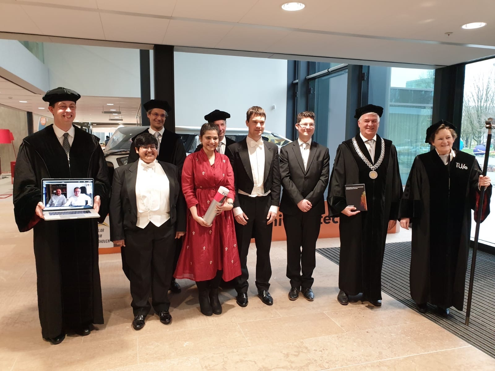

Blogs
In the news of CompMech, University of Pavia
7 Sep. 2020
Computational Mechanics & Advanced Materials (CompMech) group at University of Pavia published a news-article about my current (work-in-process) research work towards scan-based immersed isogeometric analysis. It is an honor to be part of the research group with a great minds and social dynamics. Thanks to Erasmus+ for the exchange opportunity.
27 May. 2020
Computational Mechanics & Advanced Materials (CompMech) group at University of Pavia published a news-article about my scientific publication on "Error-estimation-based adaptive integration for immersed isogeometric analysis". The research work for the article was conducted in collaboration with Eindhvoen university of technology (TU/e) under the supervision of Dr. Clemens V. Verhoosel, Prof. E. Harald van Brummelen, Prof. Alessandro Reali, and, Prof. Ferdinando Auricchio. It is sponsored by Erasmus Mundus under joint doctorate program called Simulation Engineering and Entrepreneur Development (SEED). Thanks to Erasmus+ for the funding and exchange opportunity.
Promovendus promotie (Doctoral defense)
10 Mar. 2020
Hasini Garikapati, one of my colleagues and a dear friend, successfully defended her doctoral thesis on "Computational uncertainty quantification in pressure-driven fracture processes" and graduated with flyring colors. I am very glad that the official ceremony was possible as it was just before the COVID-19 lockdown. It was a great pleasure to be one of her paranymphs. I wish her a good luck with all the future endeavours.
Source: Vinoth Krishnan Elangovan (husband of Hasini)
A one-day workshop at CompMech, University of Pavia
10 Feb. 2020
Couple of the key contributors of the Finite Cell Method (FCM) and Isogeometric Analysis (IGA) community, Prof. Alexander Düster and Dr. Clemens V. Verhoosel, visited Pavia on February 10th. In this occasion, I (on behalf of CompMech group) have arranged a one-day workshop on the current challenges in FCM, especially focused on the issues like integration, application to Additive manufacturing and high Reynolds number flow problems.
Talk at MFET 2019
3 July 2019
I have got a chance to present in MFET 2019, one of the thematic conferences by ECCOMAS. It was a nice opportunity to see the known people and meet a few new people in the field of computational mechanics. The talks were very interesting, especially, I enjoyed listening to Niels Aage from Denmark TU on topology optimization methods. It was a very happy moment to see and talk to Prof. A. J. Gil (from Swansea University) again after my Swansea days. The post-presentation discussions were interesting and engaging. The conference took place in a beautiful spa town called Bad Honnef near Bonn, Germany.

Source: X. Ju (one of the participants of the conference)
TU/e team at Coupled problems 2019
3 July 2019
Atleast once a year, my research team at Eindhoven plans a trip to a conference together. We try to make it a fun team trip together in addtion to attending some interesting talks in the conference. This year we visited Sitges (a beautiful costal town, near Barcelona, Spain) to attend a conference on coupled problems, one of the thematic conferences conducted by ECCOMAS. I have got a chance to present my work in a minisymposium called Embedded domain methods for coupled problems. It was a nice opportunity to see the known people and meet a few new people in the field of computational mechanics. The talks were very interesting, especially, I enjoyed listening to Charbel Farhat from Stanford University on Multidisciplinary and Multiscale Modeling of Aerodynamic Decelerator System. It was a very happy moment to see and talk to Prof. Djordje Peric (from Swansea University) again after my Swansea days.